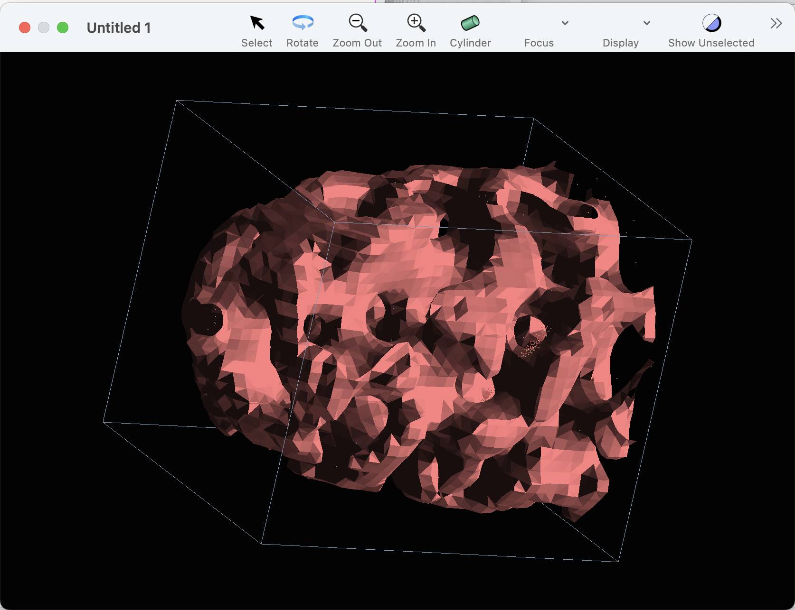
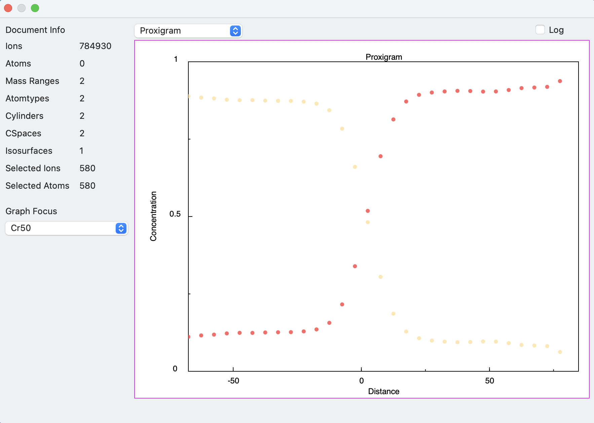

Each isosurface is defined with respect to a concentration space. So, when creating an isosurface, you'll first need to create a concentration space to use as a reference.
The other parameters needed are:
name: An optional parameter, but very useful as the name is displayed in other parts of the UI
If there are more than one item in the list, for example {"Ga", "In"}, this indicates that the threshold should be applied to the sum of the concentrations of Ga and In.
threshold: This is the concentration value used as the threshold for the isosurface.
confidence: This is a value indicating how confident (according to standard statistical error) the measurement at the gridpoint needs to be to qualify. This value is expressed in a statistical sigma value. Positive values express higher confidence. A value of zero means no statistical evaluation is performed.
This parameter is useful for suppressing noise at the edges of a sample, where the populations of the gridpoints are low.
Here's a script which creates an isosurface, assuming that the given concentration space has already been created:
tell application "Sinterapt"
if exists concentration space "CSpace20" of document 1 then
set theCSpace to concentration space "CSpace20" of document 1
make new isosurface in document 1 with properties {name:"Cr50", confidence:1.0, threshold:0.5, atomnames:{"Cr"}, concentration space:theCSpace}
else
display dialog "there is no concentration space named \"CSpace20\""
end if
end tellWhen the isosurface has been created, you'll notice the following:

